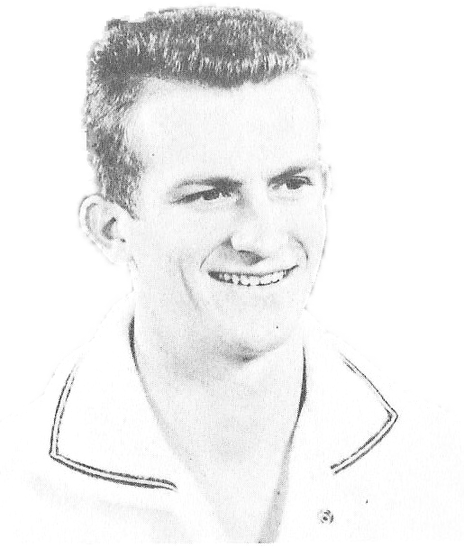
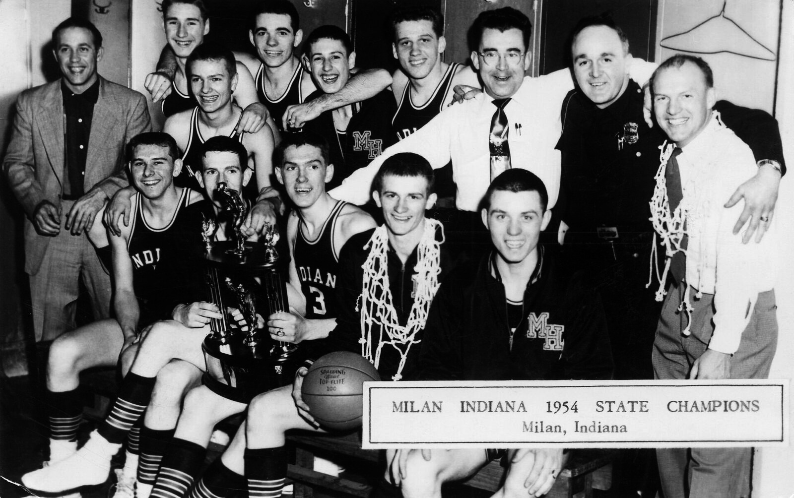

MILAN, INDIANA · 01/05/2016 · CHRIS FLOOK · CC BY-SA 4.0
1954
MILAN · INDIANA
HOY
161
×10
UN PUNTO, UN ALUMNO · RECREACIÓN
MILAN
MUNCIE C.
CUARTO
4.º
MARCADOR: RECREACIÓN

BOBBY PLUMP
FOTO: PHILLIPS 66 · DOMINIO PÚBLICO
BALÓN: RECREACIÓN
BALÓN RETENIDO
0:00
CRONÓMETRO: RECREACIÓN
GRADA: RECREACIÓN
15.000
ARO Y BALÓN: RECREACIÓN
MILAN
MUNCIE C.
32
–
30
MARCADOR: RECREACIÓN

POSTAL DEL EQUIPO CAMPEÓN DE 1954 · GROGANPHOTO / STEVE SHOOK · CC BY 2.0
FOTOS: CHRIS FLOOK (CC BY-SA 4.0), PHILLIPS 66 (DOMINIO PÚBLICO),
STEVE SHOOK / GROGANPHOTO (CC BY 2.0), VÍA WIKIMEDIA COMMONS
PUNTOS, MARCADOR, CRONÓMETRO, GRADA Y BALÓN: RECREACIÓN